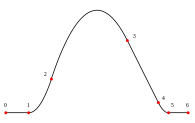

PureBasic - Spline
概要
A spline contains any number of points which are smoothly interpolated. The time to go from one point to another is always the same, independent from the distance between these points. A spline doesn't exist physically in the 3D world, it is an virtual object which can be used for different purpose, like path-finding, smooth node moving (be sure to check NodeAnimation library for this as well) and more.
InitEngine3D() should be called successfully before using the spline functions.
See also the Wikipedia article about splines.
命令索引
AddSplinePoint
ClearSpline
ComputeSpline
CountSplinePoints
CreateSpline
FreeSpline
SplinePointX
SplinePointY
SplinePointZ
SplineX
SplineY
SplineZ
UpdateSplinePoint
示例
Spline.pb
已支持操作系统
所有